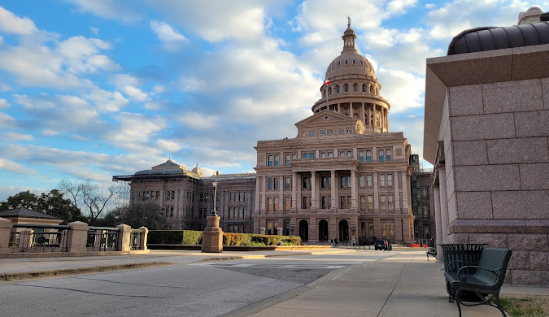
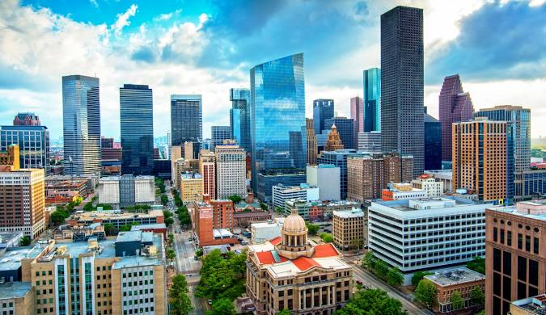
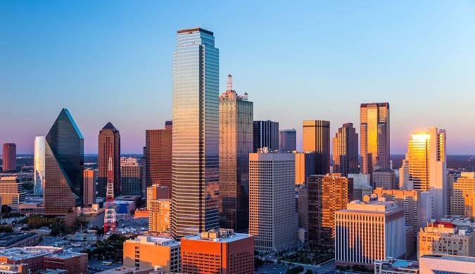
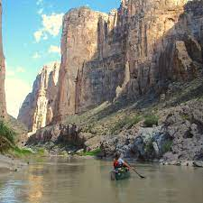
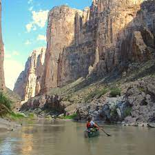

Texas
Texas, officially the State of Texas, is the second-largest state in the US by both area and population. Known by its famous moniker, "The Lone Star State," Texas embodies a unique blend of Southern, Western, and distinctly Texan culture, defined by its vast and varied geography, a rich history as an independent republic, and an immense, diversified modern economy.
FUN FACT!
Texas is known for its cowboy culture, vast landscapes, and diverse industries like oil and technology. It is also famous for its barbecue and Tex-Mex food, the historic Alamo, NASA's Johnson Space Center, and its unique brand of state pride and independent spirit.
4 BIG CITIES IN TEXAS
 AUSTIN, TEXAS
Austin is the state capital of Texas, an inland city bordering the Hill Country region. Home to the University of Texas flagship campus, Austin is known for its eclectic live-music scene centered around country, blues and rock. Its many parks and lakes are popular for hiking, biking, swimming and boating. South of the city, Formula One's Circuit of the Americas raceway has hosted the United States Grand Prix.
What is Austin, Texas Best Known For?
Austin, Texas is best known as the "Live Music Capital of the World," with a vibrant live music scene and major festivals like South by Southwest (SXSW) and Austin City Limits (ACL).
HOUSTON, TEXAS 
Houston is the largest city in Texas and the fourth-largest in the United States, known for its cultural diversity, robust economy, and significant roles in the space and medical industries. It is home to the Johnson Space Center, the Texas Medical Center, and a vibrant arts and food scene. The city is spread out, making it a car-dependent area, but it offers a wide variety of lifestyles and living environments.
SAN ANTONIO, TEXAS
San Antonio, Texas, is the second-largest city in Texas and the seventh-largest in the U.S., known for its rich history and unique cultural blend of Mexican, Spanish, and German influences. Iconic landmarks include the Alamo and the River Walk, and the city is also a major military hub, earning it the nickname "Military City, USA". The city is popular with tourists, has a growing economy, and offers a diverse mix of modern and historic attractions.
 DALLAS, TEXAS
Dallas, a modern metropolis in north Texas, is a commercial and cultural hub of the region. Downtown's Sixth Floor Museum at Dealey Plaza commemorates the site of President John F. Kennedy's assassination in 1963. In the Arts District, the Dallas Museum of Art and the Crow Collection of Asian Art cover thousands of years of art. The sleek Nasher Sculpture Center showcases contemporary sculpture.

 
